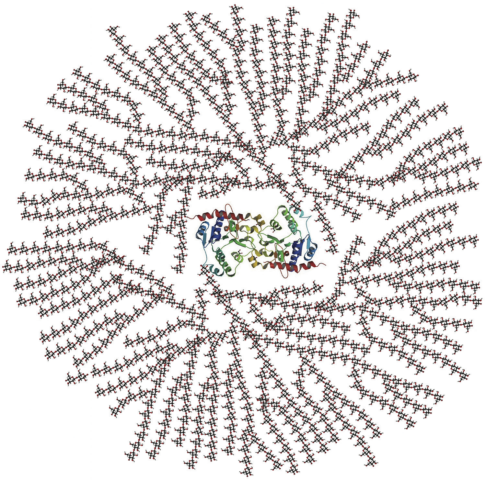

There are five primary functions of carbohydrates in the human body. They are energy production, energy storage, building macromolecules, sparing protein, and assisting in lipid metabolism.
The primary role of carbohydrates is to supply energy to all cells in the body. Many cells prefer glucose as a source of energy versus other compounds like fatty acids. Some cells, such as red blood cells, are only able to produce cellular energy from glucose. The brain is also highly sensitive to low blood-glucose levels because it uses only glucose to produce energy and function (unless under extreme starvation conditions). About 70 percent of the glucose entering the body from digestion is redistributed (by the liver) back into the blood for use by other tissues. Cells that require energy remove the glucose from the blood with a transport protein in their membranes. The energy from glucose comes from the chemical bonds between the carbon atoms. Sunlight energy was required to produce these high-energy bonds in the process of photosynthesis. Cells in our bodies break these bonds and capture the energy to perform cellular respiration. Cellular respiration is basically a controlled burning of glucose versus an uncontrolled burning. A cell uses many chemical reactions in multiple enzymatic steps to slow the release of energy (no explosion) and more efficiently capture the energy held within the chemical bonds in glucose.
The first stage in the breakdown of glucose is called glycolysis. GlycolysisThe first stage of glucose breakdown; a ten-step enzymatic process that splits glucose into two three-carbon molecules and yields two molecules of ATP., or the splitting of glucose, occurs in an intricate series of ten enzymatic-reaction steps. The second stage of glucose breakdown occurs in the energy factory organelles, called mitochondria. One carbon atom and two oxygen atoms are removed, yielding more energy. The energy from these carbon bonds is carried to another area of the mitochondria, making the cellular energy available in a form cells can use.
Cellular respiration is the process by which energy is captured from glucose.
Figure 4.5
The structure of glycogen enables its rapid mobilization into free glucose to power cells.
If the body already has enough energy to support its functions, the excess glucose is stored as glycogen (the majority of which is stored in the muscle and liver). A molecule of glycogen may contain in excess of fifty thousand single glucose units and is highly branched, allowing for the rapid dissemination of glucose when it is needed to make cellular energy (Figure 4.5).
The amount of glycogen in the body at any one time is equivalent to about 4,000 kilocalories—3,000 in muscle tissue and 1,000 in the liver. Prolonged muscle use (such as exercise for longer than a few hours) can deplete the glycogen energy reserve. Remember also from Chapter 3 "Nutrition and the Human Body" that this is referred to as “hitting the wall” or “bonking” and is characterized by fatigue and a decrease in exercise performance. The weakening of muscles sets in because it takes longer to transform the chemical energy in fatty acids and proteins to usable energy than glucose. After prolonged exercise, glycogen is gone and muscles must rely more on lipids and proteins as an energy source. Athletes can increase their glycogen reserve modestly by reducing training intensity and increasing their carbohydrate intake to between 60 and 70 percent of total calories three to five days prior to an event. People who are not hardcore training and choose to run a 5-kilometer race for fun do not need to consume a big plate of pasta prior to a race since without long-term intense training the adaptation of increased muscle glycogen will not happen.
The liver, like muscle, can store glucose energy as a glycogen, but in contrast to muscle tissue it will sacrifice its stored glucose energy to other tissues in the body when blood glucose is low. Approximately one-quarter of total body glycogen content is in the liver (which is equivalent to about a four-hour supply of glucose) but this is highly dependent on activity level. The liver uses this glycogen reserve as a way to keep blood-glucose levels within a narrow range between meal times. When the liver’s glycogen supply is exhausted, glucose is made from amino acids obtained from the destruction of proteins in order to maintain metabolic homeostasis.
Although most absorbed glucose is used to make energy, some glucose is converted to ribose and deoxyribose, which are essential building blocks of important macromolecules, such as RNA, DNA, and ATP (Figure 4.6). Glucose is additionally utilized to make the molecule NADPH, which is important for protection against oxidative stress and is used in many other chemical reactions in the body. If all of the energy, glycogen-storing capacity, and building needs of the body are met, excess glucose can be used to make fat. This is why a diet too high in carbohydrates and calories can add on the fat pounds—a topic that will be discussed shortly.
In a situation where there is not enough glucose to meet the body’s needs, glucose is synthesized from amino acids. Because there is no storage molecule of amino acids, this process requires the destruction of proteins, primarily from muscle tissue. The presence of adequate glucose basically spares the breakdown of proteins from being used to make glucose needed by the body.
As blood-glucose levels rise, the use of lipids as an energy source is inhibited. Thus, glucose additionally has a “fat-sparing” effect. This is because an increase in blood glucose stimulates release of the hormone insulin, which tells cells to use glucose (instead of lipids) to make energy. Adequate glucose levels in the blood also prevent the development of ketosis. Ketosis is a metabolic condition resulting from an elevation of ketone bodies in the blood. Ketone bodies are an alternative energy source that cells can use when glucose supply is insufficient, such as during fasting. Ketone bodies are acidic and high elevations in the blood can cause it to become too acidic. This is rare in healthy adults, but can occur in alcoholics, people who are malnourished, and in individuals who have Type 1 diabetes. The minimum amount of carbohydrate in the diet required to inhibit ketosis in adults is 50 grams per day.
Carbohydrates are critical to support life’s most basic function—the production of energy. Without energy none of the other life processes are performed. Although our bodies can synthesize glucose it comes at the cost of protein destruction. As with all nutrients though, carbohydrates are to be consumed in moderation as having too much or too little in the diet may lead to health problems.